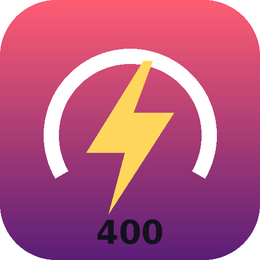

RPi400 PerformanceStarting RPi400 Performance…
It's a small program, so it has to be running first.
No icon? Open a Terminal and type:python3 ~/Desktop/"My Apps"/apps/rpi400-performance/rpi400perf.py
This page keeps checking and jumps to it as soon as it's running.